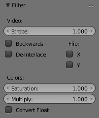

Filter Panel¶
Tham Chiếu -- Reference
| Bảng -- Panel: |
|---|

Enables you to quickly set common image pre-processing options.
Video¶
- Chớp -- Strobe
- To only display each nth frame. For example, if you set this to 10, the strip will only display frames 1, 11, 21, 31, 41... of the source. Strobe is a float value -- this way you can get a strobe effect synced exactly to a beat, for example, by using non-integer values.
- Đảo Ngược -- Reverse
- Plays the strip in reverse (time).
- Gộp Trường -- Deinterlace
- Removes fields in a video file. For example, if it is an analog video and it has even or odd interlacing fields.
- Lật Chiều X -- X Flip
- Mirrors the image along the X axis (left to right).
- Lật Chiều Y -- Y Flip
- Mirrors the image along the Y axis (top to bottom).
Màu -- Color¶
- Độ Bão Hòa -- Saturation
- Increase or decrease the saturation of an image.
- Nhân -- Multiply
- Multiplies the colors by this value. This will increases the brightness.
- Đổi Thành Số Thực Float -- Convert to Float
- Converts input to float data.